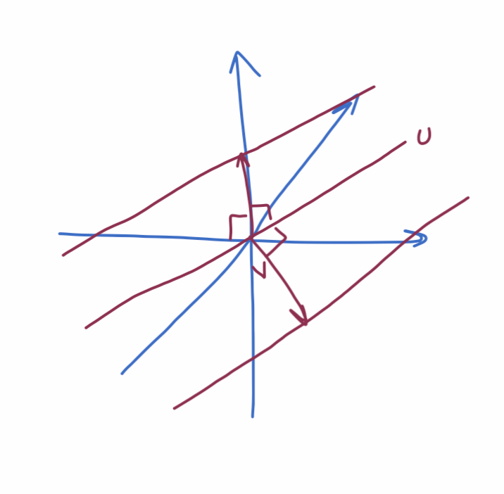

Source:
Definitions
affine subset
An affine subset of a vector space \(V\) is of the form \(U + v\) where \(U \subseteq V\) and \(v \in V\).
product space
The product of some vector spaces \(V_1 \times \cdots \times V_n\) is the set of lists of vectors with one from each respective space: \[\{ (v_1, \ldots, v_n) : v_1 \in V_1, \ldots, v_n \in V_n \}\]
quotient space
A quotient space \(V/U\) is the set of affine subsets \(\{ U+v : v \in V \}\) (although some of those affine subsets are equivalent).
equivalence relation
An equivalence relation is a set of elements that are considered equivalent (equal to eachother). For example, in a vector space \(U\), \(U+0 = U+u \forall u \in U\).
Why "product" and "quotient" are used to describe these operations
The product of vector spaces is essentially a cartesian product. With real numbers, the product is like stacking copies of an operand in a new direction (product of two numbers for area of a plane, product of three for the volume of a space). Here, we are doing essentially the same thing for vector spaces (each vector is combined within a list with other vector spaces, but they do not interact with eachother and are orthagonal, in a sense).
A quotient space is like taking (dividing) out part of a vector space. It’s like taking a modulo because a subset (\(U\)) is collapsed to zero and some things become equivalent. It is like removing ("dividing") a subset of the basis (those that form a basis of \(U\)), where the basis itself can be represented as the cartesian product \(\mathbb F^n\) (where \(n\) is the dimension of \(V\)).
Examples of quotient spaces
Let \(U = \{ (x, y) : y = 2x; x, y \in \mathbb R \}\).
In \(\mathbb R^2 / U\), vectors are of the form \(U + v\) where \(v \in V\) and any \(v \in U\) is equivalent to \(U+0\) or the line \(y=2x\), which is the additive identity. Parallel spaces ("copies" that are shifted over) are the other elements in the space. The space is dimension one, since the copies can be shifted only in one orthoganal direction. A reasonable standard basis of the space is \(( U+(-2, 1) )\)

In \(\mathbb R^3 / U\), the afine subsets extend out in two orthoganal directions. A reasonable standard basis is \(( U+ (-2, 1, 0), U+(0, 0, 1) )\).

Proove \(\dim V/U = \dim V - \dim U\) when \(V\) is a finite dim vec space
Let \(\pi \in \mathcal L(V, V/U)\) be defined by \[\pi v = U+v\] For each \(v \in v_1, \ldots, v_n\) where \(v_1, \ldots, v_n\) is a basis of \(V\).
\(\dim \text{null } \pi = \dim U\) because \(U\) is \(0\) and \(U+u = U\) iff \(u \in U\). \(\dim \text{range } \pi = \dim V/U\) because \(v\) is arbitrary and every vector in \(V/U\) is of the form \(U+v\).
Then, by the Fundamental Theorem of Linear Maps, \[\begin{aligned} \dim V & &= \dim V/U &+ \dim U\\ \dim V &- \dim U &= \dim V/U \end{aligned}\]
Suppose \(V\) is finite dimensional and \(S, T \in \mathcal L(V)\). Prove that
\(ST\) is invertible iff \(S\) and \(T\) are invertable
if
Given that \(S\) and \(T\) are invertible, \(\dim \text{null }S = \dim \text{null }T = 0\). \(ST\) is an operator on \(V\), so if it is injective then it is invertible. \[ dim V = dim null ST +